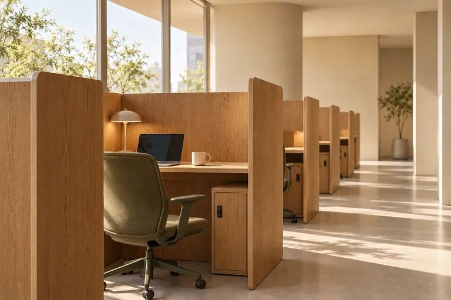
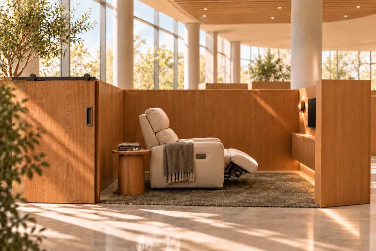
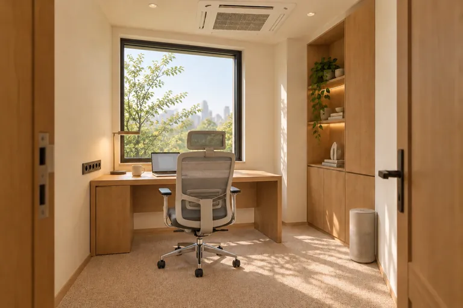

01 / 04
CAFÉ · 커피와 일상
Flow Cafe
커피 한 잔과 함께, 편안한 머무름.
음료 주문 후 이용하는 일반 카페 좌석입니다. 별도 좌석 예약은 제공하지 않습니다.
- 이용 방법
- 좌석 예약 없이 이용
- 앱에서
- 음료 주문 · 매장/테이크아웃 선택
우드 · 자연광
01 / OUR ATMOSPHERE
바쁜 하루 사이, 나만의 리듬을 되찾는 곳. 커피를 마시고, 일에 집중하고, 잠시 쉬어가는 모든 순간에 Aulo는 지금의 목적에 맞는 머무름을 제안합니다.
원목과 패브릭, 큰 창으로 드는 자연광. 오래 머물러도 편안한 질감을 고릅니다.
공간도 앱도 지금 필요한 것부터. 남은 시간, 가능한 자리, 결제 예정 금액을 먼저 보여 줍니다.
재촉하지 않는 흐름. 천천히 들어오고 짧게 반응하는 'Stay in your rhythm'이 브랜드의 움직임입니다.
STAY IN YOUR RHYTHM
시간대와 공간의 짝은 브랜드 이야기예요.
모든 공간은 운영 시간 내내 이용할 수 있어요.
02 / OUR SPACES
오늘의 목적에 맞춰 네 가지 공간을 만나보세요.
01 / 04
CAFÉ · 커피와 일상
커피 한 잔과 함께, 편안한 머무름.
음료 주문 후 이용하는 일반 카페 좌석입니다. 별도 좌석 예약은 제공하지 않습니다.
우드 · 자연광

02 / 04
FOCUS · 작업과 공부
조용히, 나의 일에 몰입.
가림막이 있는 반폐쇄형 개인 좌석에서 작업과 공부에 집중하세요. 이용 전 음료 주문이 필요합니다.
정돈 · 작업

03 / 04
REST · 온전한 휴식
잠시 멈추고, 편안하게 쉬어가세요.
실내 반폐쇄형 공간의 1인 리클라이너에서 휴식하세요. 이용 전 음료 주문이 필요합니다.
패브릭 · 여유

04 / 04
PRIVATE · 나만의 독립 공간
방해 없이, 온전히 나의 시간.
독립형 프라이빗 오피스를 단독으로 이용합니다. 매장별 공간과 예약 가능한 시간을 앱에서 확인하세요.
독립 구조 · 혼자
Aulo 이용 고객 누구나 쉬어갈 수 있는 공용 공간입니다. Flow Rest 예약 대상에는 포함되지 않습니다.
사진은 공간 분위기를 보여주는 AI 생성 참고 이미지이며, 실제 매장이 아닙니다. 가격은 포트폴리오용 임시 설정입니다.
03 / AULO APP
공간 찾기부터 예약, 이용 중 주문, 다시 예약까지.
지금 나에게 필요한 정보만 먼저 보여 줘요.
01 · FIND
무엇을 하러 오셨는지 고르면 두 가지만 더 묻고 맞는 공간을 추천해요. 추천에는 왜 이 공간인지 이유가 한 줄 붙어요.
02 · BOOK
날짜와 1시간 칸을 고르고, 창가·벽면·중앙 구역이 나뉜 배치도에서 마음에 드는 자리를 직접 골라요. 배치도는 실제 매장이 정해지기 전의 임시안이에요.
03 · TICKET
공간·날짜·시간·음료와 결제 예정 금액을 예약 카드 한 장에 담았어요. 이용료는 방문 후 매장에서 결제해요.
04 · STAY
앱을 열면 남은 시간과 종료·퇴실 시각, 재주문 쿠폰이 가장 먼저 보여요. 진행 중인 주문도 바로 아래에 이어져요.
05 · ORDER
좌석에서 추가 주문하면 접수 → 수락 → 제조 → 완료 → 수령을 진행 막대로 알려 줘요. Suite는 공간으로 배달해요.
06 · AGAIN
이용이 시작되면 재주문 쿠폰이 발급되고, 지난 예약과 주문은 버튼 하나로 같은 조건으로 다시 시작해요.
DESIGN PRINCIPLES
이용 중 · 다가오는 예약 · 예약 없음 중 지금 상태 하나만 홈 맨 위에.
지난 예약·주문을 그대로 채워 날짜만 고르면 끝.
지금 매장을 늘 표시하고, 좌석 수·운영 정보가 매장에 맞춰 바뀌어요.
목적과 이용 기록으로만 추천하고 이유를 한 줄로. 지어낸 인기 숫자는 없어요.
홈 · 추천 · 주문 · 예약 · 마이 탭바에 모으고, 같은 바로가기를 반복하지 않아요.
상태와 행동이 먼저, 안내 배너는 화면 아래 하나만.
04 / HOW TO STAY
앱에서 매장과 Flow Focus, Flow Rest, Flow Suite를 확인하세요.
내일부터 14일 뒤까지 예약 가능한 시간을 확인하고, 자리와 음료, 요청 옵션을 선택하세요.
예약 이용료는 방문 후 이용 시작 전에 매장에서 결제합니다.
좌석에서 추가 음료를 주문하고, Suite는 공간으로 배달받아요. 재주문 쿠폰이 자동으로 발급됩니다.
YOUR SPACE, YOUR RHYTHM
오늘의 목적에 맞는 머무름을 앱에서 직접 찾아보세요.
Aulo 데모 앱으로 이동해요. 가상 브랜드의 포트폴리오 데모라 실제 예약·결제는 없어요.
가상 브랜드 프로젝트라 실제 문의는 받지 않아요.